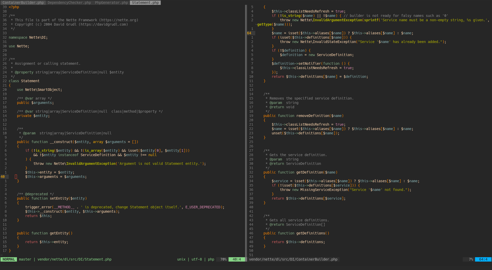
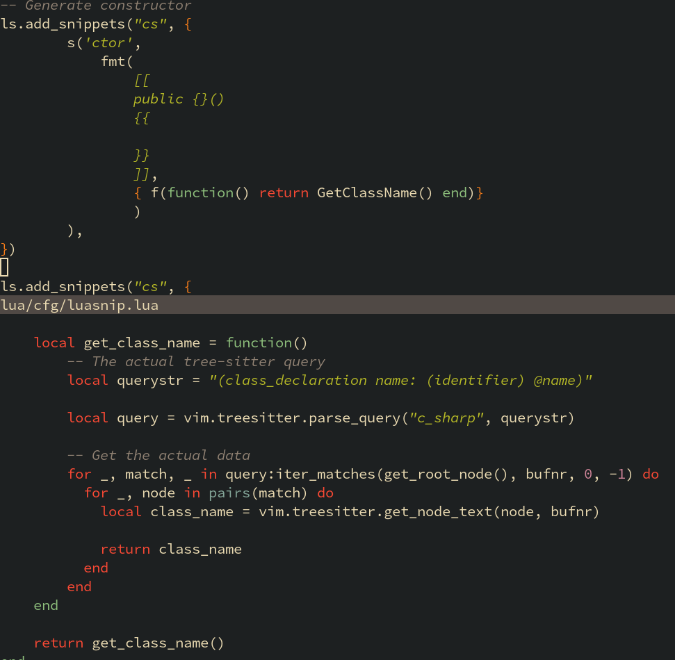

I searched for the best text editor for a long time...
After many days of search... I settled on:
Neovim

I was amazed by the customizabiliy of this text editor/IDE
Here is an example:

Constructor snippet that uses language parser to get the class name and templates/snippets.
The only limitation is your imagination and knowledge about Lua 🙂
If I start talking about Neovim, it will take atleast 200+ Hours so
I'll keep it short...